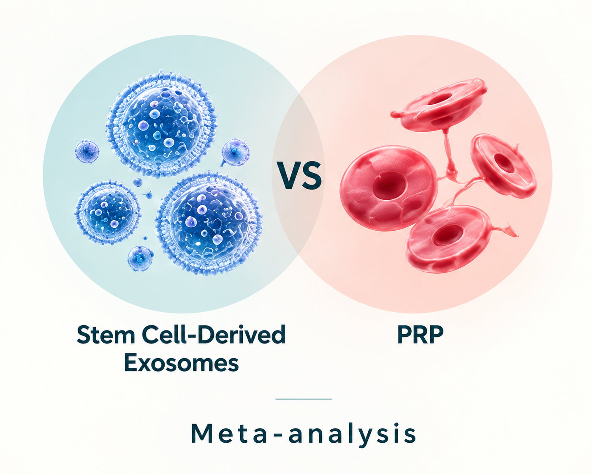
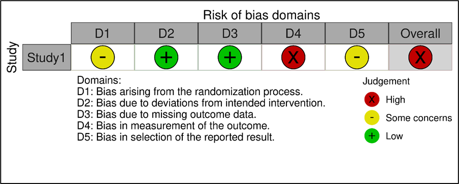
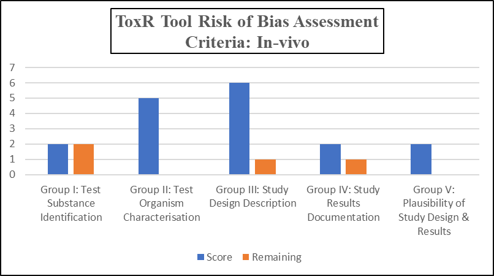

← Scientific writing
Semester project
Stem Cell-Derived Exosomes Versus PRP for Photoaging
Systematic review and meta-analysis · preclinical and clinical perspectives.

01 / Academic writing
Semester project
A collaborative systematic-review and meta-analysis project comparing human stem cell-derived exosomes with platelet-rich plasma for photoaging across preclinical and clinical literature.
Full project title
A Systematic Review on the Effectiveness of Human Stem Cell-derived Exosomes compared to Platelet-rich Plasma (PRP) in Combating Photo-aging: Preclinical and Clinical Perspective
02 / My contribution
What I contributed
- Contributed to the research idea, initial research question and PICO formulation.
- Worked on keyword and MeSH planning, database searching, screening and data extraction.
- Contributed to statistical data extraction and literature-review writing.
Selected project figures
Risk-of-bias assessment

